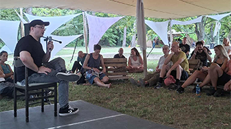

Rólam

Civilben informatikus kutató vagyok a Szegedi Tudományegyetemen - amit csak azért említek, mert A) hátha megnyugtató, hogy kutatóként azért van némi közöm az információ összefoglaláshoz, illetve B) hátha megmagyarázza az időnként furcsa hasonlataimat és szóhasználatomat. Nem civelben, saját szakállamra, a Preprocessor projekt keretében pedig talán a "bérolvasó" a legjobb cimke, amivel eddig illettek. És hogy miért jó ez neked?Egyrészt: olyan 30 éves fejjel (szóval egyáltalán nem megkésve) ráébredtem, hogy bizonyos területeken egy hangyányit túl vagyok specializálódva, viszont az "élet nagy dolgairól" meg nem tudok szinte semmit. Ezért elkezdtem az időm nem elhanyagolható százalékát önfejlesztő és ismeretterjesztő könyvek olvasására és összefoglalására fordítani (tanítva tanulás jeligére). Neked ez azért jó, mert kvázi az én számlámra megkaphatod egy relatíve széles olvasottság legfőbb tanulságait, tömören, reményeim szerint szórakoztató formában, és nem utolsó sorban ingyen.
Másrészt: ha akarnám se tudnám levetkőzni az informatikus, "kocka" gondolkodásmódom (de nem is akarom), így nem érem be az izolált könyvösszefoglalókkal, hanem mindig a korábbi tanulságokkal összevetve, párhuzamokat húzva, gyakran mentális modellekbe csomagolva írok az olvasmányaimról. Neked ez azért jó, mert ha már a saját megértésem érdekében úgyis extra rendszerezést és struktúrát csempészek az anyagokba, azzal talán neked is érthetőbb lesz, könnyebben beépül és jobban megmarad majd a mondanivaló.
Köszönöm a figyelmet, ha velem tartasz ezen az ön-gatyábarázó utazáson – remélem a végén te is annyival cizelláltabb, élet-állóbb gondolkodásmódot tudsz majd felmutatni a folyamat eredményeként, mint én!
"Fantasztikus, hogy milyen kompakt előadásokat tart - stand-up és tudás átadás keveréke, ami inspirálja a hallgatóságot."
— Karády Edit, Ügyvezető